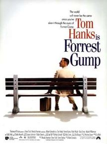
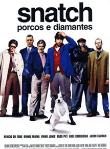

Clube da LutaJack (Edward Norton) é um executivo jovem, trabalha como investigador de seguros, mora confortavelmente, mas ele está ficando cada vez mais insatisfeito com sua vida medíocre. Para piorar ele está enfrentando uma terrível crise de insônia, até que encontra uma cura inusitada para o sua falta de sono ao frequentar grupos de auto-ajuda. Nesses encontros ele passa a conviver com pessoas problemáticas como a viciada Marla Singer (Helena Bonham Carter) e a conhecer estranhos como Tyler Durden (Brad Pitt). Misterioso e cheio de ideias, Tyler apresenta para Jack um grupo secreto que se encontra para extravasar suas angústias e tensões através de violentos combates corporais. |
|
|  |
Forrest Gump - O contador de HistóriasQuarenta anos da história dos Estados Unidos, vistos pelos olhos de Forrest Gump (Tom Hanks), um rapaz com QI abaixo da média e boas intenções. Por obra do acaso, ele consegue participar de momentos cruciais, como a Guerra do Vietnã e Watergate, mas continua pensando no seu amor de infância, Jenny Curran. |
|  |
Snatch - Porcos e DiamantesFrankie Quatro-Dedos (Benicio Del Toro) é um ladrão de diamantes que também faz o trabalho de intermediário de peças roubadas. De passagem por Londres, ele precisa chegar até Nova York para vender alguns diamantes de seu chefe, Avi (Dennis Farina). Porém, a tentação é mais forte e ele acaba dando uma pausa em sua viagem para apostar em uma luta ilegal de boxe. Enquanto isso, dois promotores de lutas chamados Turco (Jason Statham) e Tommy (Stephen Graham) se unem a um fazendeiro local, Coco de Tijolo (Alan Ford), na tentativa de convencer Mickey O'Neil (Brad Pitt), um pugilista cigano, a participar de uma luta sem luvas, onde vale tudo. O'Neil inicialmente não aceita a proposta, mas termina concordando em participar de uma luta da dupla. Já Avi, impaciente com a demora de Frankie Quatro-Dedos, contrata "Bullet Tooth" Tony (Vinnie Jones) para encontrá-lo e trazer consigo os diamantes. |